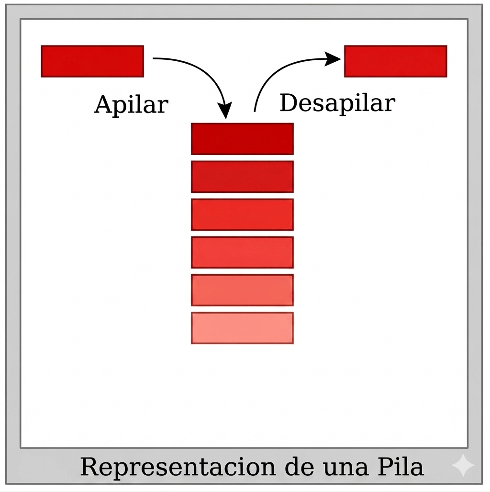
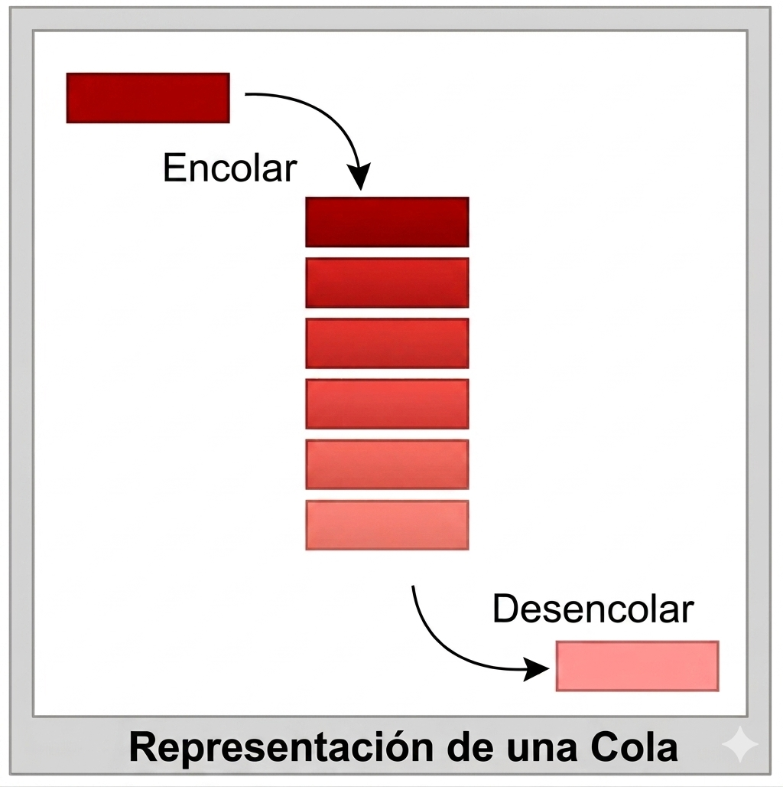
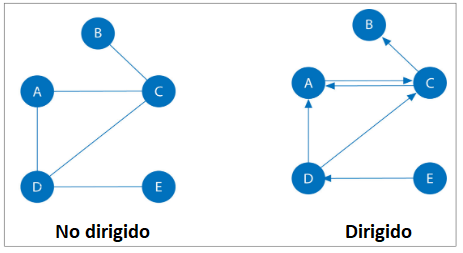

TAD (Tipus Abstracte de Dades)
En el món de la informàtica, un TAD (Tipus Abstracte de Dades) és un model que defineix un conjunt de valors i les operacions que es poden aplicar sobre ells, desinteressant-se completament de com estan implementats internament. En essència, separes el què fa (la interfície) del com ho fa (la implementació).
- Un Tipus Abstracte de Dades defineix:
- ✅ Les dades que gestiona. El model de dades: La naturalesa dels elements que emmagatzema.
- ✅ Les operacions permeses. (ex: afegir(), eliminar(), està_buit())
- ✅ Els axiomes: Les regles que regeixen aquestes operacions (ex: "si afegeixes un element i després l'elimines, l'estructura es queda igual").
- ❌ No defineix la implementació interna
Una pila permet apilar, desapilar i consultar el cim, però no diu si es fa amb llistes o arrays.
Avantatges d'utilitzar TADs
- Simplicitat: Permet gestionar la complexitat del programari ocultant detalls innecessaris.
- Manteniment: Si decideixes canviar la manera d'emmagatzemar les dades (per exemple, de fer servir una llista a fer servir un arbre) per a guanyar velocitat, la resta del programa no s'ha de modificar perquè els "botons" (la interfície) segueixen sent els mateixos.
- Robustesa: Evita que altres parts del programa modifiquen les dades internes de manera incorrecta, ja que només es pot accedir a elles mitjançant les operacions permeses.
Mentre que el TAD és el concepte teòric, l'Estructura de Dades és la implementació física i concreta d'eixe TAD en un llenguatge de programació.
TADs en Python
En Python, els TADs (Tipus Abstractes de Dades) no existeixen com una paraula clau formal del llenguatge, però sí que s’implementen perfectament utilitzant classes, mòduls i estructures de dades. Un TAD descriu quines operacions es poden fer sobre un tipus de dada, no com s’implementen internament.
En python hi ha TADs que ja estan implementats, com LLISTES, CONJUNTS, DICCIONARIS, TUPLES, i altres TADs que no ho estan,
com PILES, CUES, ARBRES, GRAFS, etc..
Com es representen els TADs en Python
- En Python solen implementar-se amb
- Classes
- Mètodes públics
- Encapsulació

Pila (Stack)
Direm que una «pila» consisteix en una estructura en la qual les dades que la componen es van afegint i extreient per un únic extrem (anomenat "cim" o "top"), de manera que l'últim element a entrar és el primer a ser recuperat (ens pot servir com a exemple de la vida real una pila de plats o una pila de llibres, on per a agafar el de baix, primer hem de treure els que estan damunt). Es tracta d'una estructura del tipus «LIFO», de l'anglés last in, first out («últim a entrar, primer a eixir)
Es tracta d'una estructura en la qual només podrem accedir a l'element situat al capdamunt (l'últim que s'hi ha afegit), les dades o processos de la qual s'aniran apilant per al seu posterior processament, seguint un ordre invers al d'arribada.
Especificació del TAD
- Operacions:
- push(x)
- pop()
- top()
- is_empty()
class Pila:
def __init__(self):
self._dades = []
def push(self, element):
self._dades.append(element)
def pop(self):
if self.is_empty():
raise IndexError("Pila buida")
return self._dades.pop()
def top(self):
if self.is_empty():
raise IndexError("Pila buida")
return self._dades[-1]
def is_empty(self):
return len(self._dades) == 0
Ús d'una pila
p = Pila() p.push(10) p.push(15) p.push(20) print(p.pop()) # 20
Exemples de piles
- Pila de plats en un restaurant
- Botó 'enrrere' d'un navegador
- CTRL-Z (funció desfer) en un editor de textos
- Tub de pilotes de tenis
- etc...

Cua (Queue)
Direm que una «cua» consisteix en una estructura en la qual les dades que la componen es van afegint per un extrem de la cua, per a després ser retornades per l'altre extrem d'aquesta, fent-la avançar (ens pot servir com a exemple de la vida real el de la cua de clients d'un centre comercial). Es tracta d'una estructura del tipus «FIFO», de l'anglés first in, first out («primer a entrar, primer a eixir)
Es tracta d'una estructura en la qual només podrem accedir al primer i a l'últim element de la cua, les dades o processos de la qual s'aniran emmagatzemant per al seu posterior processament o execució
Especificació del TAD
Implementació en Python (usant unadeque)
from collections import deque
class Cua:
def __init__(self):
self._dades = deque()
def enqueue(self, element):
self._dades.append(element)
def dequeue(self):
if self.is_empty():
raise IndexError("Cua buida")
return self._dades.popleft()
def is_empty(self):
return not self._dades
Ús de cua
cua = Cua() cua.enqueue(1) cua.enqueue(2) print (cua.dequeue() )
Per implementar una cua, usarem una estructura implementada en python: deque
deque (double-ended queue) és una estructura de dades implementada per Python dins del mòdul estàndard collections. Forma part de la biblioteca estàndard, no l’has d’instal·lar ni programar tu. S'utilitza perquè és molt eficient per a operacions als extrems.
- Operacions que fa en O(1):
- append() → afegir al final
- appendleft() → afegir al principi
- pop() → llevar del final
- popleft() → llevar del principi
Ús de cua amb deque
from collections import deque cua = deque() cua.append(1) cua.append(2) cua.popleft() # Ràpid
deque pot implementar: TAD Cua, TAD Pila, TAD Cua doble.
Tot depén de quines operacions exposes en la teua classe.
Exemples de cues
- La cua del forn o farmàcia
- Peatge de cotxes
- Tunels de rentat
- Tub de pilotes de tenis
- Atenció al client per telèfon
Llista, Conjunt, Diccionari
List, Set, Dictionary
Encara que es pot realitzar una implementació d'estos TADs, python ja els porta nadius.

Arbre (Tree)
Especificació del TAD
Què és un arbre?
Un arbre és una estructura de dades jeràrquica formada per nodes connectats entre si.
- Té un node arrel (el primer)
- Cada node pot tindre fills
- No hi ha cicles
- Cada node (excepte l’arrel) té un únic pare
Definició com a TAD
Com a TAD, l’arbre defineix:
És a dir, descriu què és un arbre i què es pot fer amb ell, però no si està fet amb classes, llistes, punters, etc.
- Components d’un arbre
- Node: element que conté una dada
- Arrel: node principal
- Fill: node que depén d’un altre
- Pare: node superior
- Fulla: node sense fills
- Subarbre: arbre dins d’un altre arbre
- Altura: longitud del camí més llarg des de l’arrel fins a una fulla
Operacions típiques del TAD Arbre
Depenent del tipus d’arbre, les operacions més habituals són:crear_arbre() arrel() fills(node) afegir_fill(node, element) eliminar(node) es_buit() recorrer() (recórrer l’arbre)
Tipus d’arbres més comuns
- Arbre General
- Arbre binari
- Arbre binari de cerca (ABB / BST)
Recorreguts de l’arbre
- En arbres binaris:
- Preordre : Arrel → Esquerra → Dreta
- Inordre : Esquerra → Arrel → Dreta
- Postordre : Esquerra → Dreta → Arrel
Exemple conceptual
A
/ \
B C
/
D
- Arrel: A
- Fills d’A: B, C
- Fulles: C, D
- Subarbre amb arrel B: B → D
Implementació vs TAD
És molt important distingir:
✅ TAD Arbre → teoria, operacions, definició
✅ Implementació → com es programa (Python, C, Java…)
A
/ \
B C
/ \ \
D E F
Exemple d'Implementació d'un arbre en Python
Cada node: guarda una dada, té una llista de fills
class Node:
def __init__(self, dada):
self.dada = dada
self.fills = []
def afegir_fill(self, node_fill):
self.fills.append(node_fill)
Crear arbre
Primer es creen els nodes, després es connecten els nodes
arrel = Node("A")
b = Node("B")
c = Node("C")
d = Node("D")
arrel.afegir_fill(b) arrel.afegir_fill(c) b.afegir_fill(d)
Recórrer l’arbre (recorregut)
def recorregut_preordre(node):
print(node.dada)
for fill in node.fills:
recorregut_preordre(fill)
Executar recorregut_preordre
recorregut_preordre(arrel)
Exemples d'arbres (tads)
- Organigrama d'una empresa
- Sistema de fitxers d l'ordinador
- Arbres genealògics
- Classificació biològica
- Tornejos de tennis

Grafs (Graphs)
Especificació del TAD
Què és un graf?
Un graf és una estructura de dades (i un objecte matemàtic) que serveix per a representar relacions entre parells d'objectes. Bàsicament, és un conjunt de punts connectats entre si.
- Es compon de dos elements clau:
- Vèrtexs (o Nodes): Són els elements o punts del graf (com ara ciutats, persones o ordinadors).
- Arrestes (o Arcs): Són les línies que uneixen els vèrtexs i representen la relació que hi ha entre ells (com una carretera, una amistat o un cable de xarxa).
Tipus principals de grafs
Segons com siguen les seues connexions, els podem classificar en
- Grafs no dirigits: Les relacions són recíproques. Si el node A està connectat amb el B, la connexió funciona en els dos sentits (com una carretera de doble sentit).
- Grafs dirigits: Les connexions tenen un sentit definit (es representen amb una fletxa). La relació va de A cap a B, però no necessàriament a l'inrevés (com un carrer d'un sol sentit).
- Grafs ponderats (o pesats): Cada arresta té un valor o "pes" (per exemple, els quilòmetres entre dues ciutats).
Per representar grafs en python es poden usar dos opcions
- Nodes, Classes
- Diccionaris
Amb diccionaris de python:
Pots representar un graf on la clau és el node i el valor és una llista dels seus veïns.
graph = {
'A': ['B', 'C'],
'B': ['D'],
'C': ['D'],
'D': []
}
I per un graf amb pesos...
# 'Node': {'Veí': Pes}
weighted_graph = {
'A': {'B': 5, 'C': 2},
'B': {'D': 4},
'C': {'D': 9},
'D': {}
}
# Per accedir al pes entre A i B:
pes = weighted_graph['A']['B'] # Retorna 5
Com recòrrer un graf
Depenent de què busques, faràs servir un algorisme o un altre. Els dos més famosos són:
- BFS (Breadth-First Search): Explora primer els veïns més propers.
S'usa una Queue (
collections.deque). Ideal per trobar el camí més curt en grafs sense pesos. - DFS (Depth-First Search): Arriba fins al fons d'una branca abans de tornar enrere. S'usa una Stack (o recursivitat).
Exemple ràpid de BFS (Cerca en amplada):
from collections import deque
def bfs(graph, start_node):
visited = set()
queue = deque([start_node])
visited.add(start_node)
while queue:
vertex = queue.popleft()
print(vertex, end=" ")
for neighbor in graph[vertex]:
if neighbor not in visited:
visited.add(neighbor)
queue.append(neighbor)
bfs(graph, 'A') # Sortida: A B C D
Exemples de grafs
- Xarxes socials
- Sistemes de navegació
- Internet
- Xarxes elèctriques
- Xarxes de neurones o IA
- Sistemes d'aigua potable o gas